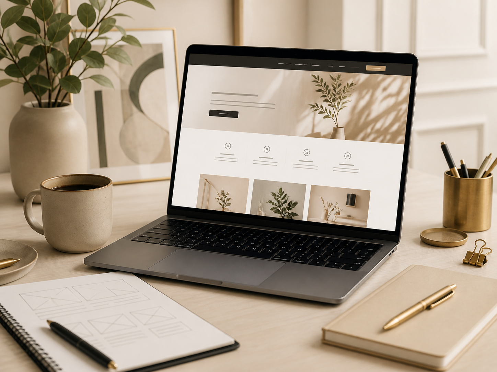
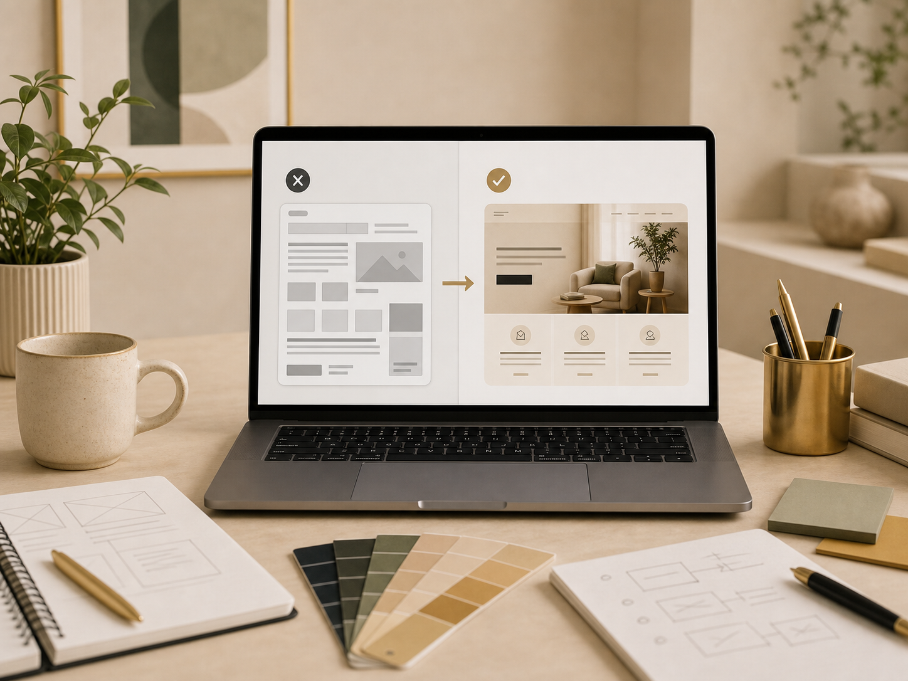
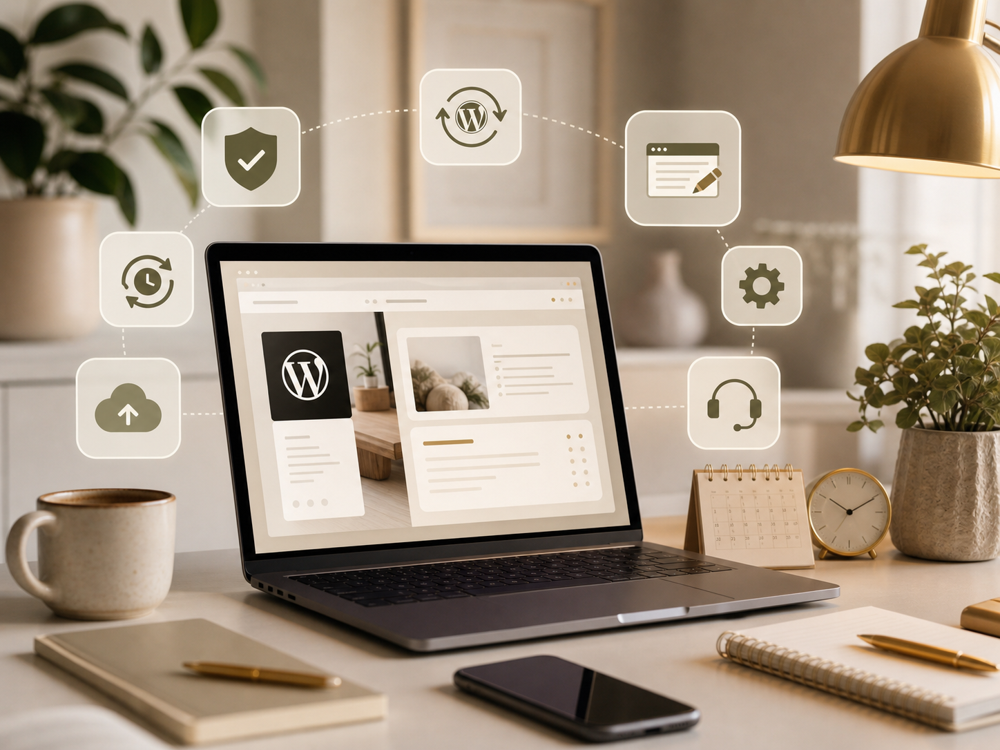
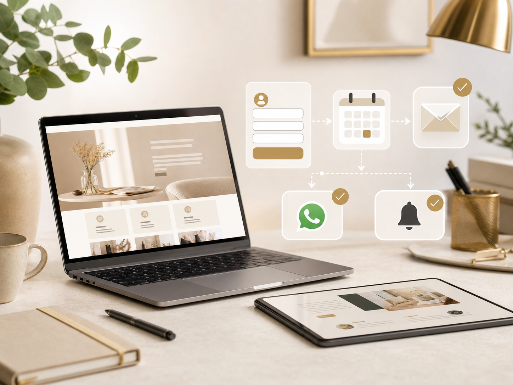
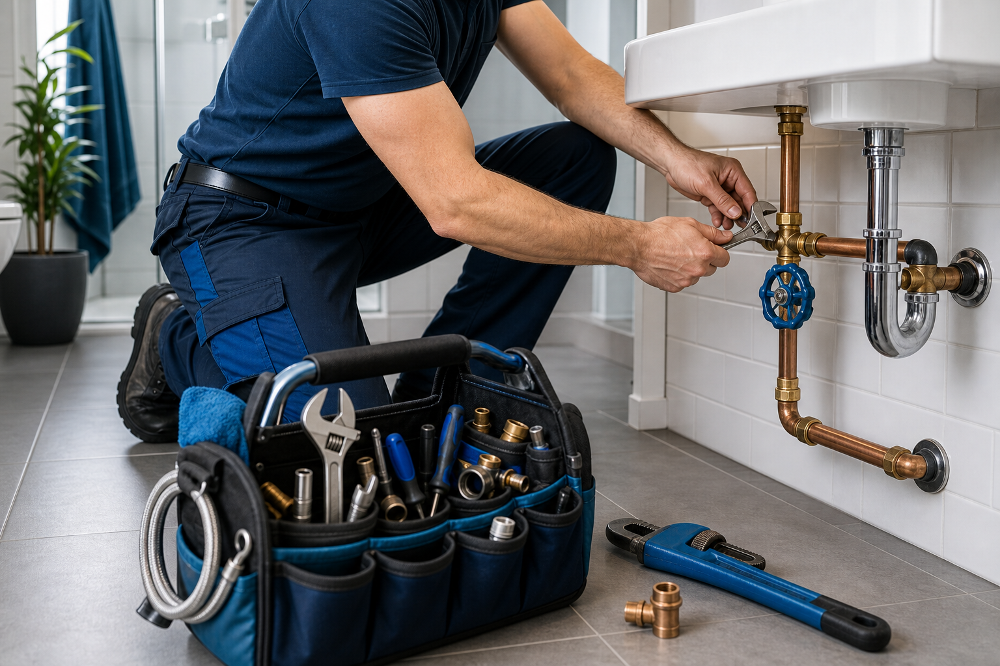

Une présence rassurante
Une page d’accueil soignée, des messages simples et un parcours qui guide vers la prise de contact.
Consultante en Création Digitale et Automatisation
J’accompagne les indépendants, consultants, coaches et petites entreprises avec des sites clairs, modernes et faciles à comprendre, conçus avec les outils les plus adaptés à leur projet pour mieux présenter leur offre et donner envie de les contacter.
Une page d’accueil soignée, des messages simples et un parcours qui guide vers la prise de contact.
Services, méthode, FAQ et contact structurés pour que vos visiteurs comprennent vite ce que vous proposez.
Formulaires, emails, prise de rendez-vous et automatisations simples selon vos besoins réels.
Offres et accompagnement
Chaque projet est adapté à votre activité, à vos objectifs et aux outils dont vous avez réellement besoin. Voici des repères tarifaires pour vous aider à situer l’investissement, avec un devis précis ensuite selon le contenu, le nombre de pages et les fonctionnalités souhaitées.

À partir de 490 €
Pour présenter votre activité avec clarté, rassurer vos visiteurs et recevoir plus facilement des demandes qualifiées.
Idéal si vous voulez une présence en ligne moderne, lisible et prête à évoluer.

À partir de 290 €
Pour rendre un site actuel plus clair, plus moderne et plus cohérent avec votre image professionnelle.
Adapté si vous avez déjà un site, mais qu’il ne reflète plus votre activité.

Sur devis selon complexité
Pour connecter vos formulaires, emails, rendez-vous, suivis simples ou agents IA à votre parcours client.
Pensé pour gagner du temps et simplifier la gestion des demandes.

À partir de 39 € / mois
Pour faire évoluer votre site après la mise en ligne : textes, sections, petites corrections et améliorations.
Utile si vous voulez avancer avec un soutien régulier, sans rester seule face au technique.
Créations
Ces cartes montrent le type de site que je peux créer pour différentes activités. L’idée n’est pas de copier un modèle, mais de construire une présence adaptée à votre métier, vos clients et votre façon de travailler.
COACHING & BIEN-ÊTRE
Objectif : Présenter l’approche, les programmes et rassurer avant une première prise de rendez-vous.
Contenu : Page d’accueil, offres, témoignages, FAQ, formulaire ou calendrier.
Résultat : Un site doux, crédible et facile à comprendre.
CONSULTING B2B
Objectif : Valoriser l’expertise, clarifier les missions et capter des demandes professionnelles.
Contenu : Expertise, accompagnements, méthode, cas d’usage, formulaire de contact.
Résultat : Une image sobre, sérieuse et rassurante.
COMMERCE LOCAL
Objectif : Donner envie, informer les clients et renforcer la visibilité locale.
Contenu : Produits, horaires, localisation, galerie, contact rapide.
Résultat : Une vitrine chaleureuse, claire et appétissante.

ARTISAN & DÉPANNAGE
Objectif : Inspirer confiance rapidement et faciliter l’appel ou la demande d’intervention.
Contenu : Zones desservies, prestations, urgences, avis, bouton téléphone visible.
Résultat : Un site direct, pratique et pensé pour les recherches locales.
SOIN & ACCOMPAGNEMENT
Objectif : Rassurer, expliquer la pratique et simplifier la prise de rendez-vous.
Contenu : Approche, séances, tarifs, FAQ, prise de contact douce et sécurisante.
Résultat : Une présence apaisante, professionnelle et humaine.
Méthode
On avance étape par étape : comprendre votre activité, structurer les contenus, créer les pages, connecter les outils utiles, puis publier quand tout est prêt.
On clarifie vos objectifs, votre cible, le style souhaité, les contenus à prévoir et les priorités du site.
Résultat : une direction claire avant de créer.
Je prépare les sections, l’organisation des pages, l’intégration WordPress, la version mobile et les formulaires.
Résultat : un site lisible, élégant et facile à parcourir.
On finalise les derniers ajustements, la connexion du domaine, les outils utiles et la prise en main.
Résultat : votre site est prêt à recevoir des demandes.
Blog
Des articles simples pour mieux comprendre les sites web, les automatisations, les agents IA et les outils qui peuvent aider les petites entreprises au quotidien.
AUTOMATISATION & AGENTS IA
Un site web ne doit plus seulement présenter une activité. Il peut aussi aider à mieux gérer les demandes, rassurer les visiteurs et faire gagner du temps avec des outils simples.
Lire l’articleCONSEILS
Site vitrine, landing page ou site one-page : découvrez les différences et les bons critères pour choisir le format adapté à votre activité.
Lire l’articleAUTOMATISATION
Prise de rendez-vous, relances, facturation, réseaux sociaux et onboarding client : les automatisations simples à mettre en place pour gagner du temps.
Lire l’articleFAQ
Oui. Les échanges peuvent se faire simplement par email, visio ou téléphone, avec un accompagnement flexible selon votre projet.
Le site vitrine convient si vous voulez présenter votre activité de façon plus complète. La landing page est idéale si vous avez une seule offre à mettre en avant ou un besoin très ciblé.
Oui. Je peux vous aider à organiser vos idées, clarifier vos messages et structurer les contenus pour que votre site soit plus simple à comprendre.
Le site vitrine commence à 490 € en tarif de lancement. Il faut aussi prévoir le nom de domaine, l’hébergement et éventuellement certains outils payants comme Calendly, une adresse email professionnelle ou des extensions WordPress premium.
Oui. Le site peut être modifié par la suite : textes, images, sections, nouvelles pages, services, formulaires, automatisations ou agents AI.
Une fois le site en ligne, il peut continuer à évoluer. Je peux vous accompagner pour les ajustements, les nouvelles sections, les outils à connecter ou les améliorations futures.
Oui. L’objectif de WordPress et Elementor est de vous permettre de modifier les textes et certaines sections simplement.
Je peux structurer et améliorer vos textes à partir de vos informations. Pour les images, nous pouvons utiliser vos propres photos, des visuels générés ou des images adaptées à votre activité.
Non. Si vous avez déjà un domaine, on le connecte au site. Sinon, je peux vous guider pour l’acheter et préparer la configuration.
Oui. On peut ajouter un bouton Calendly, WhatsApp, téléphone ou email selon la façon dont vous voulez recevoir les demandes.
Oui, selon vos besoins : formulaire, email automatique, demande de devis, prise de rendez-vous ou outils connectés.
Contact
Expliquez-moi votre besoin, le type de site souhaité ou les services qui vous intéressent. Je vous répondrai par email avec un retour clair et un devis adapté.
Réponse par email sous 24 à 48h ouvrées.
Email : contact@enasdigital.fr
Téléphone : 07 61 68 84 25